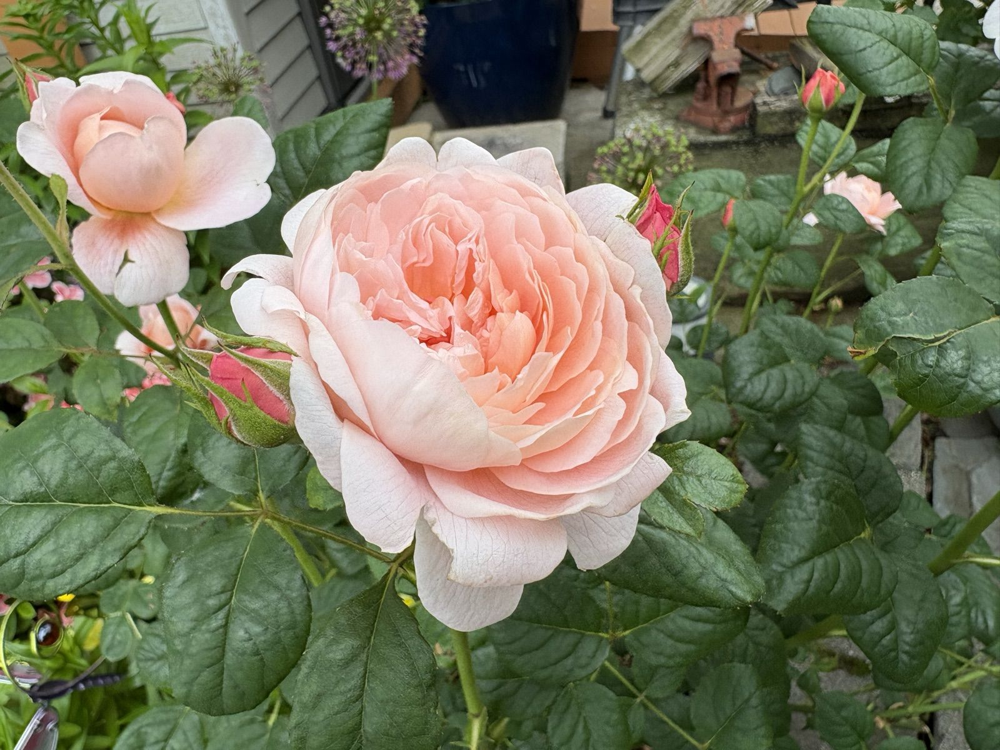
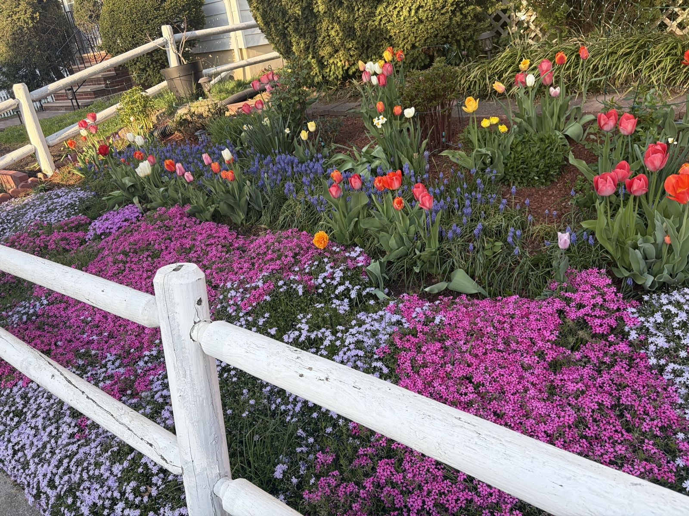
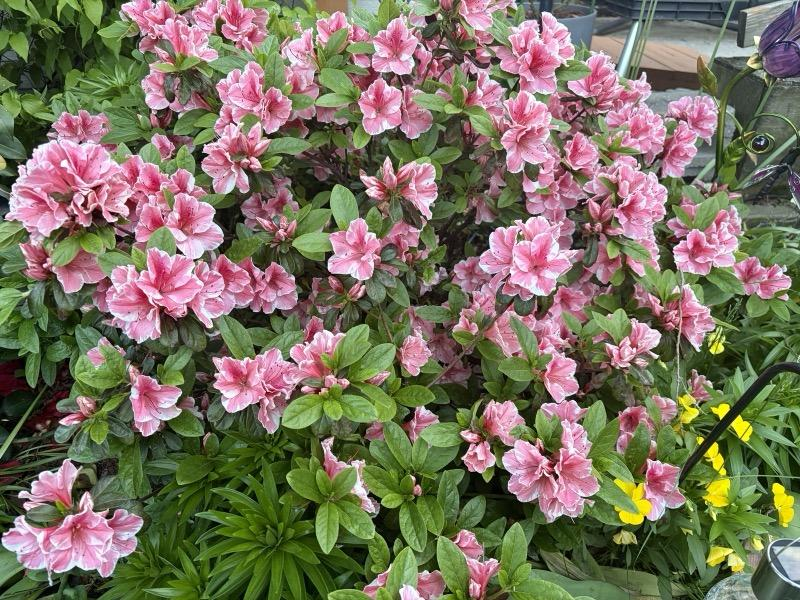
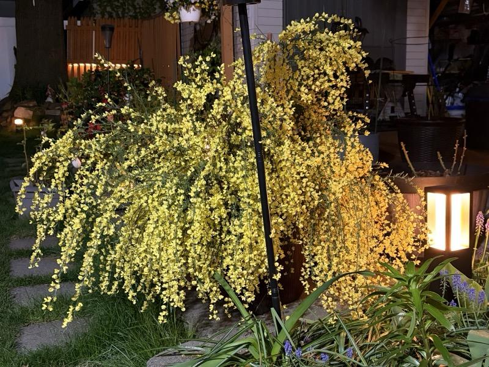
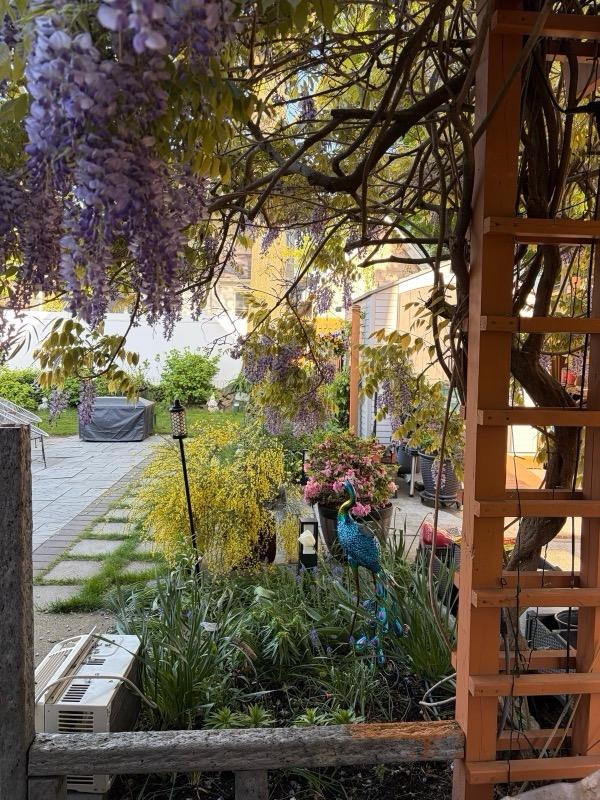
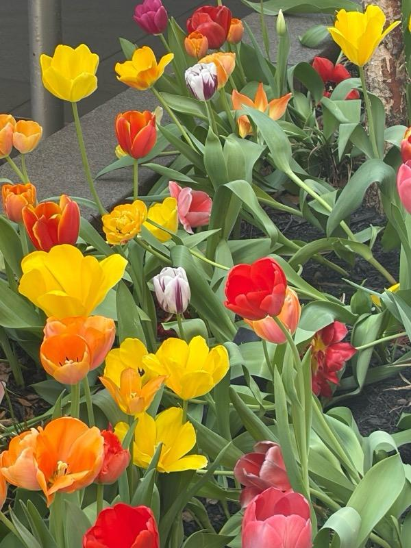
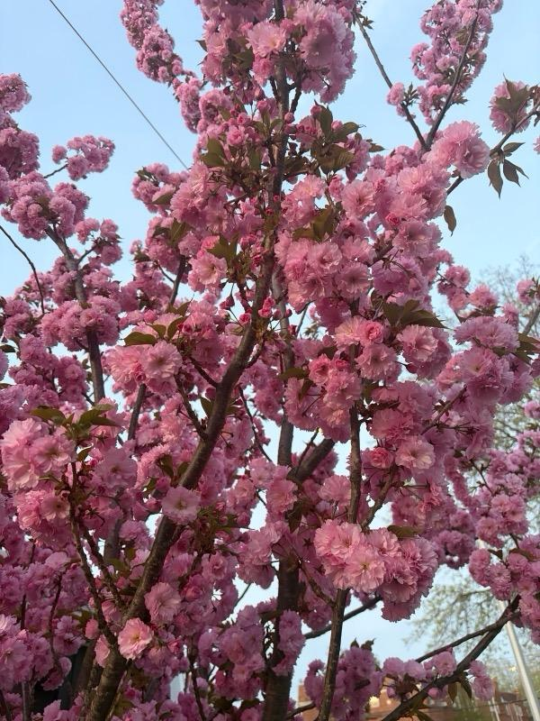

Latest —
June Belongs to the Roses
The climbing rose buried its trellis, an apricot beauty stole the show, and one rose showed up in peppermint stripes.
Notes from one backyard, one bloom at a time.


The climbing rose buried its trellis, an apricot beauty stole the show, and one rose showed up in peppermint stripes.

Three azaleas in three shades of pink, plus the raspberry-red tree peony that stops sidewalk traffic every May.

Solar lanterns, a camellia in the spotlight, and why I keep wandering outside in my slippers at 10 p.m.

For about ten days the whole yard hangs in purple. The arbor disappears, the air smells like grape soda, and I forgive every pruning session.

Every bulb I planted last November, graded honestly. The doubles surprised me, the stripes redeemed themselves.
The front border wakes up: phlox in three colors, tulips punching through, and grape hyacinth filling every gap.

No flower on this street works harder for two weeks a year. Pom-poms of double pink, then a snowstorm of petals.